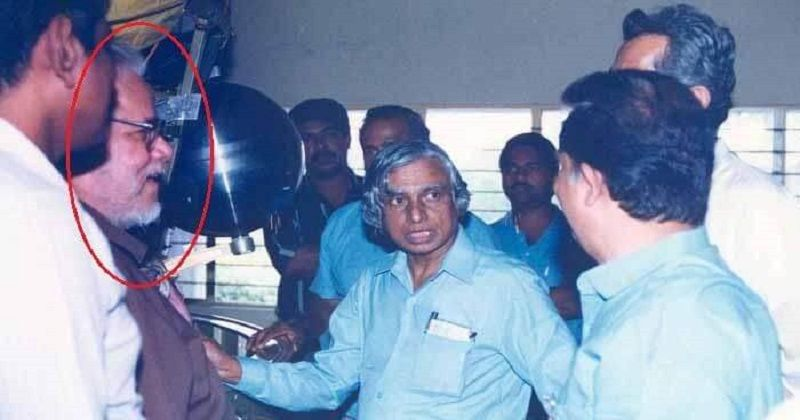
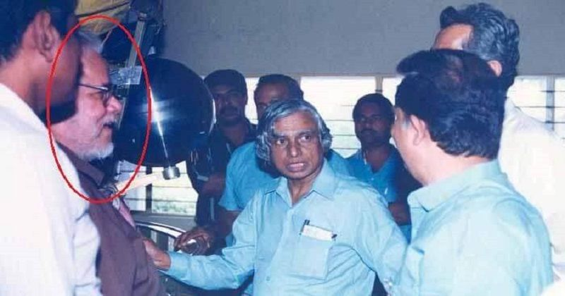

Dr. APJ Abdul Kalam, known as the "Missile Man of India," was a renowned scientist and the 11th President of India. His contributions to the field of space and missile technology are unparalleled, and his inspirational life continues to motivate millions.
Early Life
Dr. APJ Abdul Kalam was born on October 15, 1931, in Rameswaram, Tamil Nadu. He came from a humble background and had a keen interest in academics from a young age. Despite financial constraints, his parents supported his education, and he excelled in his studies.
Career
Dr. Kalam began his career as a scientist at the Aeronautical Development Establishment of the Defense Research and Development Organization (DRDO). He later joined the Indian Space Research Organisation (ISRO), where he played a pivotal role in developing India's first satellite launch vehicle. He also served as the project director of India's first indigenous satellite launch vehicle, SLV-III, which successfully deployed the Rohini satellite in near-Earth orbit in July 1980.
Achievements
- Key role in India's Pokhran-II nuclear tests in 1998.
- Developed the Integrated Guided Missile Development Program (IGMDP).
- Recipient of numerous awards, including the Bharat Ratna, India's highest civilian honor.
Books by Dr. Kalam
- Wings of Fire: An autobiography that details his early life and career.
- Ignited Minds: A book that aims to inspire the youth of India to dream big and achieve great things.
- India 2020: A vision for transforming India into a developed nation by 2020.
Legacy
Dr. APJ Abdul Kalam's legacy is one of inspiration, dedication, and humility. He inspired countless individuals to pursue their dreams and contribute positively to society. His life and work continue to be celebrated and remembered by people all over the world.
Gallery
 
